1080B97 right rear lambda sensor on catalytic converter r r
- Path
- Procedures > 10 ENGINE > 1080 EXHAUST EMISSION CONTROL SYSTEM > 1080B exhaust emission control system > 1080B97 right rear lambda sensor on catalytic converter r r
- Kind
- repair procedure (removal / refitting; the operation number is the code)
- Applies to
- engines: 2.0 JTS, 2.5 V6, 3.2 V6, 2.0 JTS; all production periods
- Interactive page
- https://sloeber94.github.io/elrnDB-a156/en/#/3237590
Applies to: engines: 2.5 V6, 3.2 V6; all production periods; only with equipment: Euro 3
 Removing
Removing
 Refitting
RefittingPlace the vehicle on a ramp.
Ensure that the ignition key is in the OFF postition, then disconnect the battery negative terminal.
 | Name | Connector |
|---|---|---|
- | Battery |
1. Open the cover of the electrical connection box.
2. Remove the connections (2a) and disconnect the electrical connection for the right rear Lambda sensor for the catalytic converter (2b).
| Name | Connector |
|---|---|---|
2b | Lambda sensor on catalyzer -2 |
Release the electrical wiring for the right rear Lambda sensor for the catalytic converter from the fastenings in the engine bay.
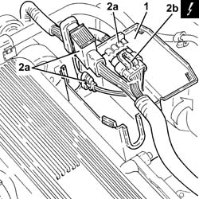
Applies to: engines: 2.5 V6, 3.2 V6; all production periods; only with equipment: Euro 3
1. Undo the bolts (1a) and move the rigid coolant supply pipe (1b) to the engine oil heat exchanger.
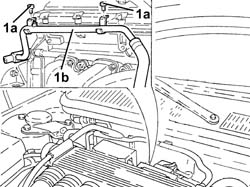
Applies to: engines: 2.5 V6, 3.2 V6; all production periods; only with equipment: Euro 3
1. Fit a suitable mounting bracket for the power unit on the cylinder block/crankcase.
2. Fit the crossmember (2a) complete with support mountings (2b).
 | Name | Country |
|---|---|---|
2a | Crossmember | 1.820.581.000 |
| Name | Country |
|---|---|---|
2b | Support mountings | 1.870.650.000 |
3. Connect the rod for the tool supporting the power unit on the bracket fitted previously on the cylinder block/crankcase and tension it.
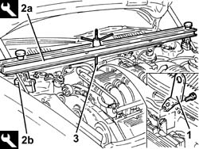
Applies to: engines: 2.5 V6, 3.2 V6; all production periods; only with equipment: Euro 3
Proceed with the removal 7055B54 under-engine guard - r r .
1. Undo the bolt (1a) and remove the bracket (1b) joining the front sections of the exhaust pipe.
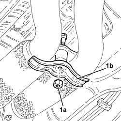
Applies to: engines: 2.5 V6, 3.2 V6; all production periods; only with equipment: Euro 3
1. Undo the lower bolt fixing the left catalytic preconverter heat shield.
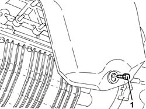
Applies to: engines: 2.5 V6, 3.2 V6; all production periods; only with equipment: Euro 3
1. Undo the nuts fixing the exhaust pipes between the catalytic preconverters and the catalytic converter, catalytic preconverter side.
Remove the gaskets.
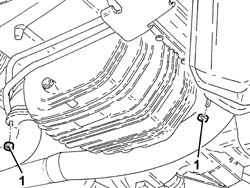
Applies to: engines: 2.5 V6, 3.2 V6; all production periods; only with equipment: Euro 3
1. Undo the nuts (1a) and remove the exhaust pipe between the left preconverter and the catalytic converter (1b).
Remove the gasket.
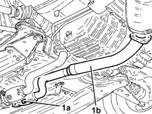
Applies to: engines: 2.5 V6, 3.2 V6; all production periods; only with equipment: Euro 3
1. Release the electrical wiring for the right rear Lambda sensor for the catalytic converter from the underbody fastenings.
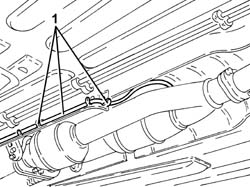
Applies to: engines: 2.5 V6, 3.2 V6; all production periods; only with equipment: Euro 3
1. Undo the nuts (1a) and remove the heat shield (1b) for the power unit rigid rear support.
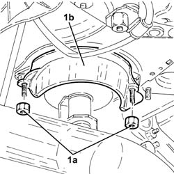
Applies to: engines: 2.5 V6, 3.2 V6; all production periods; only with equipment: Euro 3
1. Position a hydraulic jack under the gearbox.
2. Undo the bolts (2a), the bolts (2b) and remove the power unit rigid rear support (2c) complete with flexible mounting.
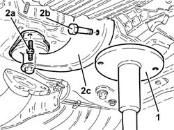
Applies to: engines: 2.5 V6, 3.2 V6; all production periods; only with equipment: Euro 3
Lower the power unit, as necessary.
1. Move the hydraulic jack under the front suspension crossmember.
2. Undo the front nuts securing the mounting for the gear and handbrake levers.
3. Loosen the centre bolts fixing the gear lever and handbrake lever support.
4. Undo the bolts securing the power steering box to the front suspension crossmember.
5. Undo the rear bolts fixing the front suspension crossmember to the bodyshell.
6. Undo the side bolts fixing the front suspension crossmember to the bodyshell.
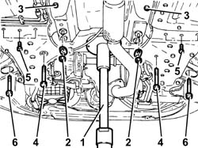
Applies to: engines: 2.5 V6, 3.2 V6; all production periods; only with equipment: Euro 3
1. Undo the nuts (1a) and disconnect the front suspension anti-roll bar joints (1b) from the anti-roll bar.
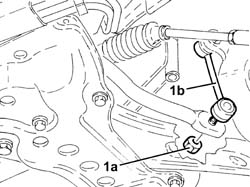
Applies to: engines: 2.5 V6, 3.2 V6; all production periods; only with equipment: Euro 3
Lower the front suspension crossmember using the hydraulic jack, then remove the latter.
Release the electrical wiring for the right rear Lambda sensor for the catalytic converter from the fastenings.
1. Undo the right rear Lambda sensor from the catalytic converter using a suitable spanner and remove it.
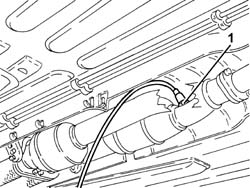
Applies to: engines: 2.5 V6, 3.2 V6; all production periods; only with equipment: Euro 3
Refitting
Removing1. Place the right rear Lambda sensor for the catalytic converter back in its housing and tighten it to the recommended torque.
 | Fastening | Component | Ø | Value (daNm) |
|---|---|---|---|---|
1 | - | LAMBDA SENSOR BEHIND RIGHT CONVERTER | M18 | (Catalytic converter assembly side) 4.0 ÷ 5.0 |
Secure the electrical wiring for the right rear Lambda sensor for the catalytic converter using the fastenings.
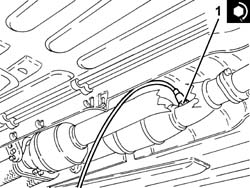
Applies to: engines: 2.5 V6, 3.2 V6; all production periods; only with equipment: Euro 3
Position the hydraulic jack under the front suspension crossmember and place it in its housing.
1. Connect the front suspension anti-roll bar joints (1a) to the anti-roll bar and tighten the nuts (1b) to the specified torque.
| Fastening | Component | Ø | Value (daNm) |
|---|---|---|---|---|
1b | Nut | FRONT ANTI-ROLL BAR JOINTS | M10 | (Anti-roll bar side) 3.8 ÷ 4.7 |
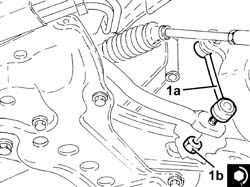
Applies to: engines: 2.5 V6, 3.2 V6; all production periods; only with equipment: Euro 3
1. Tighten the side bolts securing the front suspension crossmember to the bodyshell to the recommended torque.
| Fastening | Component | Ø | Value (daNm) |
|---|---|---|---|---|
1 | Side bolt | ENGINE OR ROD ANCHORAGE BEAM | M12 | (Bodyshell side) 10.8 ÷ 13.2 |
2. Tighten the rear bolts securing the front suspension crossmember to the bodyshell to the recommended torque.
| Fastening | Component | Ø | Value (daNm) |
|---|---|---|---|---|
2 | Rear bolt | ENGINE OR ROD ANCHORAGE BEAM | M10 | (Bodyshell side) 8.1 ÷ 9.9 |
| Fastening | Component | Ø | Value (daNm) |
|---|---|---|---|---|
2 | Rear bolts | ENGINE OR ROD ANCHORAGE BEAM | M12 | (Bodyshell side) 10.8 ÷ 13.2 |
3. Tighten the bolts securing the power steering box to the front suspension crossmember to the specified torque.
| Fastening | Component | Ø | Value (daNm) |
|---|---|---|---|---|
3 | Bolt | POWER STEERING BOX | M14 | (Front suspension crossmember side) 12.4 ÷ 13.7 |
4. Tighten the centre bolts fixing the gearbox and handbrake lever mounting.
5. Tighten the front nuts securing the gear and handbrake lever mountiing.
6. Move the hydraulic jack under the gearbox.
Place the power unit back in its housing using the hydraulic jack.
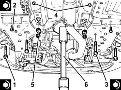
Applies to: engines: 2.5 V6, 3.2 V6; all production periods; only with equipment: Euro 3
1. Place the power unit rigid rear support (1a), complete with flexible mounting back in its housing and fasten it by tightening the bolts (1b) and (1c) to the recommended torque.
| Fastening | Component | Ø | Value (daNm) |
|---|---|---|---|---|
1b | Bolt | POWER UNIT RIGID REAR MOUNT | M16 | (Gearbox side) 10.2 ÷ 12.6 |
| Fastening | Component | Ø | Value (daNm) |
|---|---|---|---|---|
1c | Bolt | INTERM RUBBER MOUNT | M8 | (Front suspension crossmember side) 3.1 ÷ 3.8 |
2. Remove the hydraulic jack from under the gearbox.
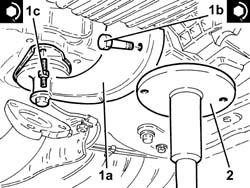
Applies to: engines: 2.5 V6, 3.2 V6; all production periods; only with equipment: Euro 3
Place the heat shield for the power unit rigid rear support back in its housing and secure it using the nuts.
Secure the electrical wiring for the right rear Lambda sensor for the catalytic converter to the underbody fastenings.
1. Place the exhaust pipe between the left preconverter and the catalytic converter (1a) back in its housing, with the gasket fitted and secure it to the catalytic converter tightening the nuts (1b) to the recommended torque.
| Fastening | Component | Ø | Value (daNm) |
|---|---|---|---|---|
1b | Nut | LEFT PRECONVERTER.CONVERTER PIPE/ | M8 | (Catalytic converter side) 2.5 ÷ 3.1 |
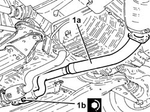
Applies to: engines: 2.5 V6, 3.2 V6; all production periods; only with equipment: Euro 3
1. Connect the exhaust pipes between the catalytic preconverters and the catalytic converter (1a), catalytic preconverter side, with the gaskets fitted and tighten the nuts (1b) to the recommended torque.
| Fastening | Component | Ø | Value (daNm) |
|---|---|---|---|---|
1b | Nut | LEFT PRECONVERTER.CONVERTER PIPE/ | M8 | (Catalytic preconverter side) 2.5 ÷ 3.1 |
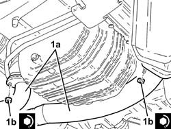
Applies to: engines: 2.5 V6, 3.2 V6; all production periods; only with equipment: Euro 3
Tighten the lower bolts fixing the left catalytic preconverter heat shield.
Place the bracket joining the front section of the exhaust pipe back in its housing and secure it using the bolt.
Proceed with the refitting 7055B54 under-engine guard - r r .
Disconnect the rod for the tool supporting the power unit from the bracket fitted on the cylinder block/crankase.
Remove the safety tools used for supporting the power unit.
| Name | Country |
|---|---|---|
- | Crossmember | 1.820.581.000 |
| Name | Country |
|---|---|---|
- | Support mountings | 1.870.650.000 |
Remove the safety bracket used for supporting the power unit from the cylinder block/crankcase.
Place the rigid coolant supply pipe to the engine oil heat exchanger back in its housing and fasten it using the bolts.
Secure the electrical wiring for the right rear Lambda sensor to the catalytic converter using the fastenings in the engine compartment.
Connect the electrical connection for the right rear Lambda sensor for the catalytic converter.
Close the electrical connection box cover.
Connect the battery terminal (-).
Remove the car from the ramp.
Applies to: engines: 2.0 JTS, 2.0 JTS; all production periods
Removing
RefittingPosition the vehicle on the ramp.
Ensure that the ignition key is in the OFF position, then disconnect the negative battery terminal.
| Name | Connector |
|---|---|---|
- | Battery |
1. Disconnect the electrical connection for the rear right Lambda sensor to the catalytic converter and release it from its mounting bracket.
| Name | Connector |
|---|---|---|
1 | Lambda sensor on catalyzer -2 |
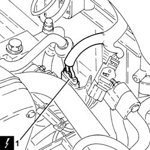
Applies to: engines: 2.0 JTS, 2.0 JTS; all production periods
Proceed with removal 7055B54 under-engine guard - r r .
1. Undo and remove the right rear Lambda sensor for the catalytic converter.
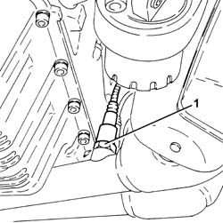
Applies to: engines: 2.0 JTS, 2.0 JTS; all production periods
Refitting
Removing1. Place the right rear Lambda sensor for the catalytic converter back in its housing and tighten it to the recommended torque.
| Fastening | Component | Ø | Value (daNm) |
|---|---|---|---|---|
1 | - | LAMBDA SENSOR BEHIND RIGHT CONVERTER | M18 | 4.0 ÷ 5.0 |
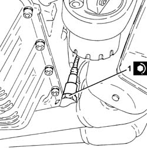
Applies to: engines: 2.0 JTS, 2.0 JTS; all production periods
Proceed with refitting 7055B54 under-engine guard - r r .
Connect the electrical connection for the right rear Lambda sensor for the catalytic converter and secure it to the mounting bracket.
Connect the negative (-) battery terminal.
Remove the car from the ramps.